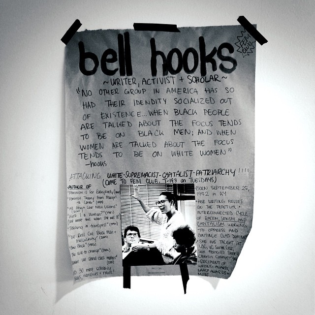

Bell Hooks
Gloria Jean Watkins, mais conhecida pelo pseudônimo bell hooks ,é uma autora, teórica feminista e artista. Watkins publicou mais de trinta livros e numerosos artigos acadêmicos. Numa perspectiva pós-moderna, e influenciada pela pedagogia crítica de Paulo Freire, o trabalho de hooks aborda raça, classe e gênero.

No momento em que escolhemos amar, começamos a nos mover contra a dominação, contra a opressão. No momento em que escolhemos amar, começamos a nos mover em direção à liberdade, a agir de formas que libertam a nós e aos outros. Bell Hooks
História
O nome "bell hooks" foi inspirado na sua bisavó materna, Bell Blair Hooks. A letra minúscula, que desafia convenções linguísticas e académicas, pretende dar enfoque ao conteúdo da sua escrita e não à sua pessoa. O seu objectivo, porém, não é ficar presa a uma identidade em particular mas estar em permanente movimento.
Watkins publicou mais de trinta livros e numerosos artigos acadêmicos, apareceu em vários filmes e documentários, e participou de várias palestras públicas. Sua obra incide principalmente sobre a interseccionalidade de raça, capitalismo e gênero, e aquilo que hooks descreve como a capacidade destes para produzir e perpetuar sistemas de opressão e dominação de classe Em 2014, fundou o bell hooks Institute[6] com sede no Berea College, no Kentucky, Estados Unidos.